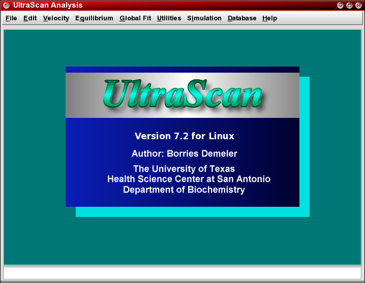

|
|
Manual |
To start UltraScan, click on the UltraScan icon that should be installed on your desktop:
IF you don't have the icon installed, you can create a shortcut or link to the UltraScan software. The icon will be located at $ULTRASCAN/etc/ultra.xpm, and the application will be located at $ULTRASCAN/bin/us
If the environment variable $ULTRASCAN is not defined on your system, please contact your system administrator.
Once the UltraScan icon is installed on your desktop, you can start the application by clicking on it. The following screen should open up:

Please Note:
UltraScan requires that you install a registration key file on your computer in order to use the software. Lack of this license file will prevent you from running, and instead present you with a dialogue asking you to register the software. For more information on the license key registration process please refer to the License Key documentation.
This document is part of the UltraScan Software
Documentation distribution.
Copyright © notice
The latest version of this document can always be found at:
Last modified on February 16, 2005.
{kind=link}